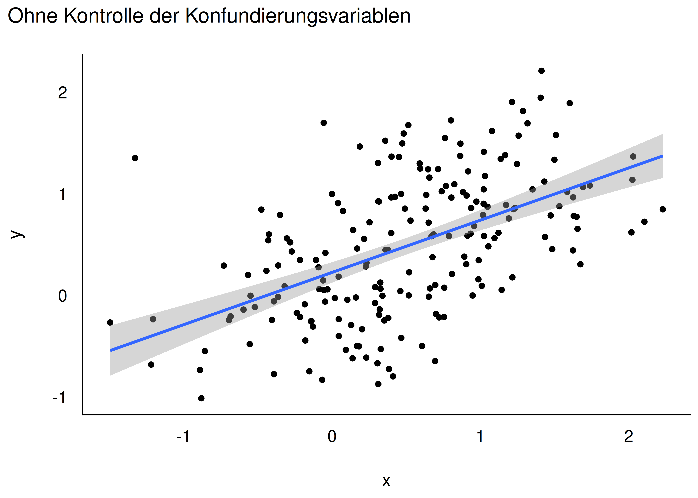
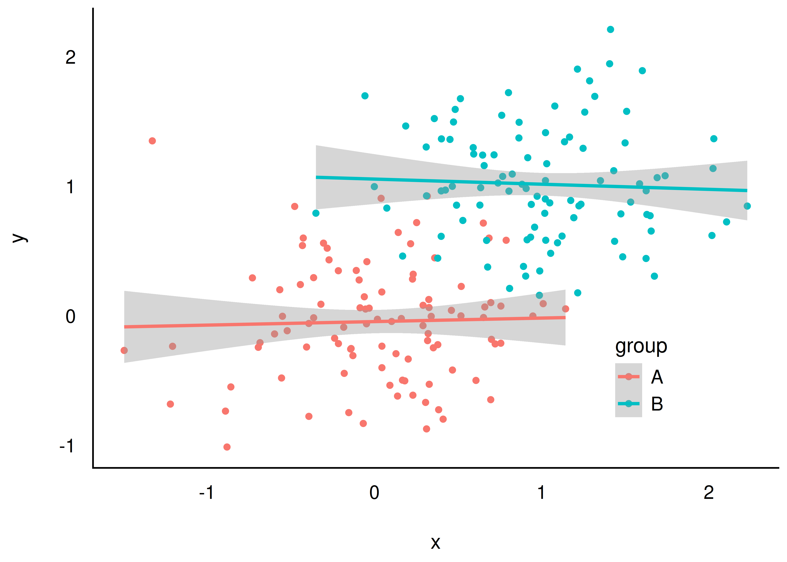

Start:Bayes!
Konfundierung
Datensatz
Konfundierung
- Einstieg in die Kausalanalyse (Kausalinferenz)
- Zentrale Frage: Was ist die Ursache eines Phänomens?
- Heute: ein häufiger Fall von Scheinkorrelation — die Konfundierung
Datensatz
Lernziele
Sie können …
- erklären, was eine Konfundierung ist
- DAGs lesen und zeichnen
- Konfundierung in einem DAG erkennen
Datensatz
Einstieg
Von Störchen und Babies
- Klassisches Beispiel:
Anzahl_StoercheundAnzahl_Babiessind korreliert - Moral der Geschichte: Nur weil zwei Variablen korrelieren, heißt das nicht, dass die eine die Ursache der anderen ist
Und: Ein Regressionsgewicht ungleich Null in einer Regressionsanalyse bedeutet nicht automatisch, dass die UV Ursache der AV ist.
Einstieg
Statistik, was soll ich tun?
Studie A: Östrogen — Was raten Sie dem Arzt?
| Gruppe | Mit Medikament | Ohne Medikament |
|---|---|---|
| Männer | 81/87 (93 %) | 234/270 (87 %) |
| Frauen | 192/263 (73 %) | 55/80 (69 %) |
| Gesamt | 273/350 (78 %) | 289/350 (83 %) |
- Bei Männern und bei Frauen hilft das Medikament
- Insgesamt aber scheinbar nicht — Widerspruch?
Statistik, was soll ich tun?
Kausalmodell zur Studie A
{kind=link}
- Geschlecht beeinflusst Medikamenteneinnahme und Heilung
- Effekt von Geschlecht und Medikament ist in den Gesamtdaten vermengt (konfundiert)
Wichtig
Hier zeigt die Stratifizierung (Betrachtung pro Gruppe) den wahren kausalen Effekt.
Statistik, was soll ich tun?
Studie B: Blutdruck — Was raten Sie dem Arzt?
| Gruppe | Ohne Medikament | Mit Medikament |
|---|---|---|
| geringer Blutdruck | 81/87 (93 %) | 234/270 (87 %) |
| hoher Blutdruck | 192/263 (73 %) | 55/80 (69 %) |
| Gesamt | 273/350 (78 %) | 289/350 (83 %) |
- Innerhalb jeder Blutdruckgruppe scheint das Medikament zu schaden
- Insgesamt scheint es zu nutzen — gleiche Zahlen wie Studie A, andere Geschichte!
Statistik, was soll ich tun?
Kausalmodell zur Studie B
{kind=link}
- Medikament senkt Blutdruck (gut) und wirkt toxisch (schlecht)
- Blutdrucksenkung wirkt sich positiv auf Heilung aus
Wichtig
Hier zeigen die Gesamtdaten den wahren Effekt. Stratifizieren wäre hier falsch — man sähe nur den toxischen Teileffekt.
Statistik, was soll ich tun?
Gleiche Daten, unterschiedliches Kausalmodell
- Studie A und Studie B haben identische Zahlen
- Aber: unterschiedliche Kausalmodelle → unterschiedliche richtige Antworten
- Kausale Interpretation ist nur möglich, wenn das Kausalmodell bekannt ist
- Die Daten allein reichen nicht
Statistik, was soll ich tun?
Sorry, Statistik: Du allein schaffst es nicht
Wichtig
Für Entscheidungen (“Was soll ich tun?”) braucht man kausales Wissen. Kausales Wissen basiert auf einer Theorie (Kausalmodell) plus Daten.
- Datenanalyse allein reicht nicht für Kausalschlüsse
- Datenanalyse + Kausalinferenz erlaubt Kausalschlüsse
Statistik, was soll ich tun?
Vertiefung: Studie C — Nierensteine
- Ärzte wählen Behandlung A bei großen Steinen, Behandlung B bei kleinen
- Größe beeinflusst Behandlung und Heilung
- Kette: Größe \(\rightarrow\) Behandlung \(\rightarrow\) Heilung, plus direkter Effekt Größe \(\rightarrow\) Heilung
{kind=link}
Statistik, was soll ich tun?
Nierensteine: sollte man size kontrollieren?
- Ziel: Kausaleffekt von
treatmentschätzen - Ja —
sizesollte kontrolliert werden - Ohne Kontrolle: vermengter Effekt von
sizeundtreatment, keine belastbare Aussage über die Behandlung
Statistik, was soll ich tun?
Weitere Scheinkorrelationen
- “Einkommen und Heiraten korrelieren hoch — also erhöht Heiraten dein Einkommen.” Wirklich?
- “Wer sich beeilt, kommt zu spät zur Besprechung — also lieber nicht beeilen.” Wirklich?
- Beide Schlüsse sind voreilig: mögliche Drittvariablen im Spiel
Statistik, was soll ich tun?
Zwischenfazit
- Beobachtungsstudien: Aus den Daten allein ist nicht erkennbar, ob ein kausaler Effekt vorliegt — nur Kenntnis des Kausalmodells + Daten erlaubt eine Entscheidung
- Experimentelle Daten: Kausalmodell ist (bei gutem Design) nicht nötig — Randomisierung und Kontrolle verhindern Konfundierung
Statistik, was soll ich tun?
Konfundierung
Die Geschichte von Angie und Don
- 🧑 Don: Immobilienmogul, Auftraggeber
- 👩 Angie: Data Scientistin
- Datensatz:
SaratogaHouses— Hauspreise im Saratoga County, USA - Don will wissen: Was ist meine Immobilie wert?
Konfundierung
Modell 1: Preis als Funktion der Zimmerzahl
{kind=link}
m1: price ~ bedrooms- Jedes Zimmer mehr ist ca. 50.000 $ wert (laut
m1)
Konfundierung
Dons Idee: mehr Zimmer durch Wände einziehen
- Don verdoppelt die Zimmerzahl durch das Einziehen von Mauern
- Erwartung: doppelter Verkaufspreis
- Aber: Vorhersage laut
m1mit 4 statt 2 Zimmern → Preis steigt trotzdem (vonm1isoliert betrachtet) - Das Problem:
m1berücksichtigt nicht die Wohnfläche — künstlich mehr, aber kleinere Zimmer ändern real nichts am Wert
Konfundierung
Punktschätzer vs. Schätzintervalle
predict()/point_estimate(): nur ein Punktschätzer, kein Intervallestimate_prediction(): Vorhersageintervall — zwei Quellen der Ungewissheit (Parameter + Strukturmodell)estimate_expectation(): Konfidenzintervall — nur eine Quelle (Parameter)
Konfundierung
Modell 2: Zimmerzahl und Wohnfläche
m2: price ~ bedrooms + livingArea- Kontrolliert man
livingAreamit, dreht sich das Bild
{kind=link}
Konfundierung
Die Zimmerzahl ist negativ mit dem Preis korreliert
… wenn man die Wohnfläche kontrolliert:
{kind=link}
Hinweis
Eine Aussage kann nur dann richtig sein, wenn ihre Annahmen richtig sind. “Mehr Zimmer = mehr Wert” ist kein Naturgesetz, sondern hängt vom zugrundeliegenden Modell ab.
Konfundierung
Kontrollieren von Variablen
- Prädiktoren in der multiplen Regression werden kontrolliert (adjustiert, konditioniert)
- Koeffizienten zeigen den Effekt eines Prädiktors, wenn die anderen konstant gehalten werden
- Man spricht auch von parziellen Regressionskoeffizienten oder dem “Netto-Effekt”
Wichtig
Das Hinzufügen von Prädiktoren kann die Gewichte der übrigen Prädiktoren ändern.
Konfundierung
Welches Modell ist richtig?
Wichtig
In Beobachtungsstudien hilft nur ein korrektes Kausalmodell. Ohne Kausalmodell ist es nutzlos, Regressionskoeffizienten zur Erklärung von Ursachen heranzuziehen — die Koeffizienten können sich wild ändern, sogar das Vorzeichen (Simpson-Paradox).
“… any observed correlation between an outcome and predictor could be eliminated or reversed once another predictor is added to the model.” — McElreath (2020)
Konfundierung
Kausalmodell km1
{kind=link}
- Erklärung für
m1/m2:livingAreabeeinflusst sowohlbedroomsals auchprice - Wenn
km1stimmt: Scheinkorrelation zwischenbedroomsundprice - d-connected: Variablen sind über einen gerichteten Pfad “verbunden”
Konfundierung
Definition: Konfundierungsvariable
Definition: Konfundierungsvariable
Eine Konfundierungsvariable (Konfundierer) ist eine Variable, die den Zusammenhang zwischen UV und AV verzerrt, wenn sie nicht kontrolliert wird (VanderWeele & Shpitser, 2013).
Konfundierung
m2 kontrolliert den Konfundierer livingArea
{kind=link}
- Kontrolliert man
livingArea, werdenbedroomsundpriceunkorreliert (d-separated)
Konfundierung
Definition: Blockieren
Definition: Blockieren
Das Kontrollieren eines Konfundierers “blockt” den betreffenden Pfad — es besteht dann über diesen Pfad keine Assoziation mehr zwischen UV und AV. UV und AV sind dann d-separated (“getrennt”).
Konfundierung
Konfundierer kontrollieren — mit vs. ohne


- Links: ohne Kontrolle der Konfundierungsvariable → Scheinkorrelation
- Rechts: mit Kontrolle → keine Korrelation mehr
Wichtig
Kontrollieren Sie Konfundierer.
Konfundierung
m1/m2 passen nicht zu km1
- Laut
km1dürfte es keine Assoziation zwischenbedroomsundpricegeben, wennlivingAreakontrolliert wird - In den Daten gibt es aber noch eine Assoziation
- Also:
m1undm2sind nicht mitkm1vereinbar
Konfundierung
Kausalmodell km2: Mediation
{kind=link}
- Wirkkette:
area\(\rightarrow\)bedrooms\(\rightarrow\)price, plus direkter Effektarea\(\rightarrow\)price - Mittlere Variable = Mediator, der Pfad = Mediation
Konfundierung
Dons Kausalmodell km3
{kind=link}
- Don behauptet:
bedroomsundlivingAreasind unkorreliert - Realität: Sie sind korreliert (Angie rechnet es nach)
km3widerspricht also den Daten
Konfundierung
Unabhängigkeiten laut den Kausalmodellen
km1: \(b \indep p \mid a\) (bedrooms unabhängig von price, gegeben area) — passt nicht zu den Datenkm2: keine Unabhängigkeiten postuliert — passt formal zu den Daten, ist aber ein saturiertes (empirisch schwaches) Modellkm3: \(b \indep a\) — passt nicht zu den Daten
Hinweis
Ein saturiertes Modell (alle Variablen korreliert) ist kaum falsifizierbar und daher wissenschaftlich wenig aussagekräftig.
Konfundierung
DAGs: Directed Acyclic Graphs
Mehrere DAGs passen oft zu einer Datenlage
{kind=link}
- Mehrere Kausalmodelle können die gleichen (Un-)Abhängigkeiten implizieren
- Empirisch nicht unterscheidbar — man bräuchte mehr/andere Variablen
DAGs: Directed Acyclic Graphs
Definition: DAG
Definition: DAG
DAGs sind eine Art von Graphen zur Analyse von Kausalstrukturen. Ein Graph besteht aus Knoten (Variablen) und Kanten (Linien). DAGs sind gerichtet (Pfeile von Ursache zu Wirkung) und azyklisch (keine Rückführung auf sich selbst).
Definition: Pfad
Ein Pfad ist ein Weg durch den DAG, von Knoten zu Knoten über die Kanten, unabhängig von der Pfeilrichtung.
DAGs: Directed Acyclic Graphs
Was ist eine Ursache?
Hinweis
Weiß man, was die Wirkung \(W\) einer Handlung \(H\) (Intervention) ist, so hat man \(H\) als Ursache von \(W\) erkannt (McElreath, 2020).
Definition: Kausale Abhängigkeit
Ist \(X\) die Ursache von \(Y\), so hängt \(Y\) von \(X\) ab: \(Y\) ist (kausal) abhängig von \(X\).
Viele Menschen denken fälschlich, dass Korrelation Kausation bedeuten muss.
DAGs: Directed Acyclic Graphs
Der Schoki-DAG
{kind=link}
- Schokoladenkonsum und Nobelpreise korrelieren stark (\(r = 0{,}79\))
- Möglicher Konfundierer: Entwicklungsstand eines Landes
DAGs: Directed Acyclic Graphs
Fazit
Zusammenfassung
- Zwei Variablen können korreliert sein durch:
- einen kausalen (“echten”) Zusammenhang
- einen nichtkausalen Zusammenhang (Scheinkorrelation)
- Konfundierung ist eine mögliche Ursache einer Scheinkorrelation
- Aufdecken: angenommenen Konfundierer kontrollieren (z. B. als Prädiktor in der Regression)
- Löst sich der Scheinzusammenhang dabei nicht auf, sondern dreht sich das Vorzeichen um: Simpson-Paradox
Fazit
Fazit
Wichtig
Die Daten allein können nie sagen, welches Kausalmodell zutrifft. Fachwissen ist nötig, um DAGs auszuschließen.
- Korrelation \(\neq\) Kausation
- Um Scheinkorrelation von echter Assoziation abzugrenzen: Kausalmodelle prüfen
- Konfundierung ist eines von vier “Atomen” der Kausalinferenz (neben Kollision, Mediation, Nachfahre)
Fazit
Vielen Dank!
Fragen?
Fazit

Start:Bayes! — Konfundierung